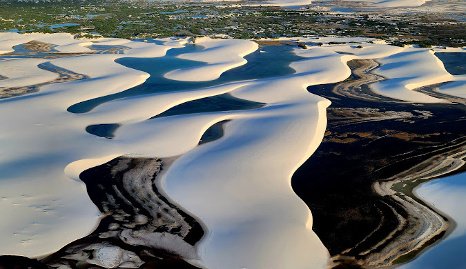

O Maranhão, localizado no nordeste do Brasil, é um estado de grande diversidade natural e cultural. Sua capital, São Luís, é famosa por seu centro histórico colonial, tombado como Patrimônio Mundial pela UNESCO, e pelas festas tradicionais, como o Bumba Meu Boi. O estado é conhecido pelas belezas naturais, como os Lençóis Maranhenses, com suas dunas e lagoas de água cristalina, e o Parque Nacional dos Lençóis. A economia do Maranhão é impulsionada pela agricultura, principalmente a produção de soja e arroz, além da pesca e turismo. O Maranhão é um lugar de muita história, cultura e paisagens únicas, encantando quem o visita.
 Voltar